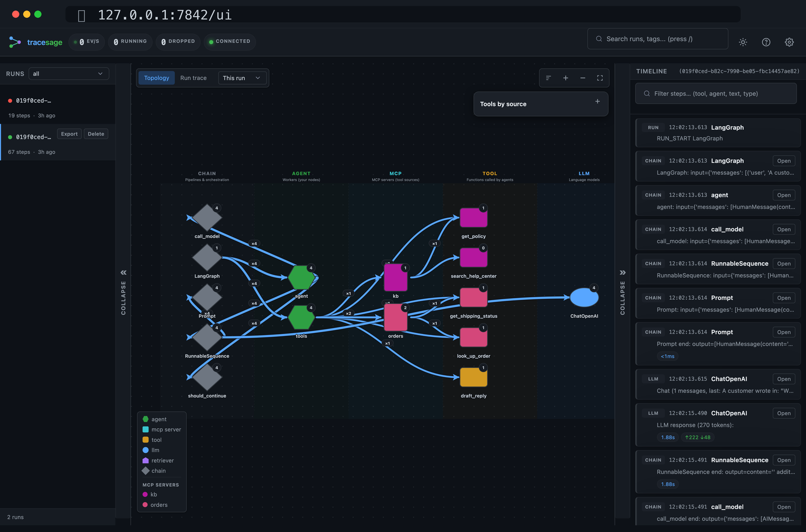

Design and deploy production AI applications on cloud-native LLM infrastructure: RAG,
agentic workflows, and serving.
Work with customers to turn technical requirements into ML solutions, prototype
approaches, evaluate how a system actually behaves, and drive production adoption.
Diagnose ML system issues alongside engineering and product, balancing model quality
against latency, reliability, and operational constraints.
Both came out of wiring agents together at work: one to see what a run actually did, one
to give a model typed access to a vector store.
tracesage
Local-first tracing for LangChain and LangGraph agents: one callback, a live graph, no
cloud account.

Fig. 1 Live agent topology, drawn from a single LangChain
callback: agents, MCP tools, and LLM nodes with the run timeline beneath.
Problem Hosted tracers work well, but reaching for a cloud account to debug an
agent at your own desk is the wrong shape of tool.
Approach Capture the LangChain callback stream, store each run in SQLite, and
render a live graph and timeline locally. Prompts never leave the machine. Run replay,
token and latency analysis, MCP tool-source attribution, a pytest fixture, and optional
OpenTelemetry export round it out.
Outcomepip install "tracesage[langchain]" then
tracesage demo. MIT-licensed and in beta; picked up by
Python Weekly #750.
A vector store as typed tools: write a tools.yaml, then load it in Python
or serve it over MCP.
You write
collectioninvoices
tenantacme
url${QDRANT_URL}
api_key${QDRANT_API_KEY}
The model sees
search_invoices
querystring
clientstring
statusenum
min_amountnumber
Fig. 2 One tool, from both sides. Credentials and the tenant
filter stay in the YAML; the compiled schema carries only the arguments the model is
allowed to set.
Problem Pointing an agent at your own data usually means one of two compromises.
A vendor's MCP server hands the model cluster administration, including upsert and
delete. Binding schemas by hand means re-implementing filters, limits, and tenant
isolation in every agent that touches the store.
Approach Declare each tool in a tools.yaml: the collection, the
parameters a model may pass, and the static filters it must never see. The compiler
validates the file, lints it for leaked secrets, and emits either in-process Python
tools or an MCP server. Connection details and tenant scoping stay server-side and are
applied to every call.
Outcomepip install "vectorsmith[qdrant]" then
vectorsmith serve tools.yaml. Apache-2.0, on PyPI, with adapters for
Qdrant, Chroma, Milvus, pgvector, Pinecone, and Weaviate. The backends are still marked
experimental.
The case for vectorsmith: why a model pointed at your store needs read-only,
data-shaped tools with enums, hard limits, and a tenant filter it cannot drop, rather
than the cluster verbs a vendor MCP server hands it.
NLP, LLMs, RAG, PEFT with LoRA and QLoRA, fine-tuning, prompt engineering,
evaluation.
Research
Experimental design, model evaluation, error analysis, data augmentation,
benchmarking.
Serving & infra
vLLM, Kubernetes on AKS, Docker, KV-cache optimisation, OpenTelemetry, CI/CD,
Databricks.
Frameworks
PyTorch, Hugging Face Transformers, spaCy, TensorFlow and Keras, LangChain,
LangGraph.
Backend
Python, FastAPI, Pydantic, Flask.
Cloud & data
Azure, AWS, SQL, CosmosDB.
About
How I like to work
I care about systems that survive real traffic, and methods that hold up under scrutiny.
Ship
Production over theatre. Latency, accuracy, and grounding under load, not prototype
applause.
Prove
Measure what matters. Quantify the impact so a team can trust the system rather than
the pitch.
Publish
Sharpen the method. When a problem needs a better evaluation or a better model story,
write it down.
Most of the work is building and evaluating LLM systems across fine-tuning, RAG, agentic
workflows, and production inference, with a lot of the time going on experimentation and
on working out where a system fails. Open to collaborations on LLM tooling, production AI
systems, agent observability, and applied NLP. Best reached by email.